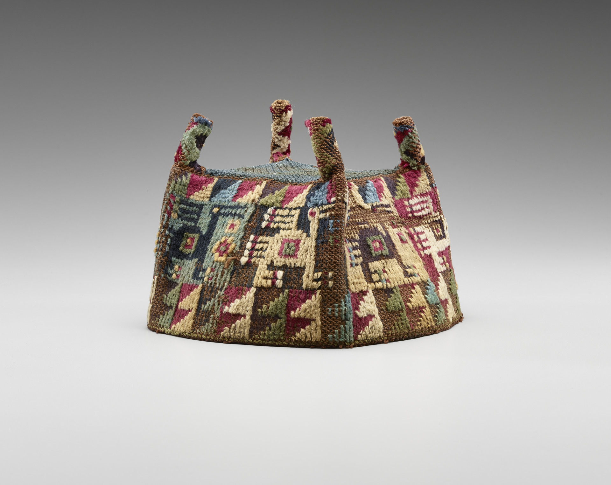

Woven Textile
Description
A preserved piece of hand-woven cloth featuring bright geometric patterns dyed with natural pigments. Textiles like this were highly valued in Andean societies.
Metadata
- Date: c. 1200 CE
- Place: Peru
- Culture: Inca / Andean Highlands
- Medium: Camelid fiber, natural dyes
- Dimensions: 20 × 15 cm
- Credit Line: Indigenous Arts Collection
- Accession Number: 2023.31.07
Use & Function
Textiles were used for clothing, ceremonial garments, and offerings. High-quality textiles were considered more valuable than gold in Andean culture.
Cultural Context
Andean textiles encoded social status, lineage, and regional identity. Their patterns often represented cosmological beliefs and agricultural cycles.
Ottoman Iznik Ceramic Tile
.jpeg)
Description
A brightly colored ceramic tile featuring floral and geometric motifs typical of Iznik pottery. These tiles were used to decorate mosques and palaces.
Metadata
- Date: 16th century CE
- Place: Iznik, Turkey
- Culture: Ottoman Empire
- Medium: Glazed ceramic
- Dimensions: 25 × 25 cm
- Credit Line: Islamic Art Collection
- Accession Number: 2023.91.15
Use & Function
Iznik tiles were used as architectural decoration, adding color and symbolic meaning to religious and royal buildings.
Cultural Context
The floral motifs reflect Ottoman artistic traditions influenced by Persian, Byzantine, and Islamic aesthetics.
Egyptian Faience Ushabti

Description
A small turquoise-blue faience figurine representing a servant meant to accompany the deceased in the afterlife. Ushabtis were often inscribed with spells from the Book of the Dead.
Metadata
- Date: c. 600 BCE
- Place: Thebes, Egypt
- Culture: Ancient Egyptian
- Medium: Faience with glaze
- Dimensions: 14 cm
- Credit Line: Gift of the Egypt Exploration Society
- Accession Number: 2023.61.03
Use & Function
Ushabtis served as magical servants who would perform labor for the deceased in the afterlife. They were placed in tombs as part of burial rituals.
Cultural Context
These figurines reflect Egyptian beliefs about the afterlife and the importance of ensuring comfort and labor assistance for the dead.